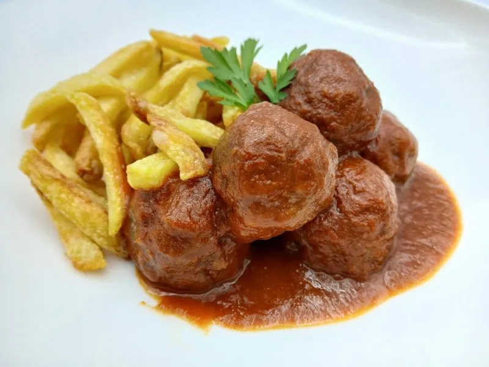

Albondigas a lo facíl, con patatas

características
- Dificultad - Facíl
- Tiempo - 45min aprox.
- Personas - 2
Ingredientes
| Ingrediente | Cantidad |
|---|---|
| Carne picada | 500g |
| huevos | 1 |
| Sal | Al gusto |
| Pereji | Al gusto |
| Pimienta negra | Al gusto |
| Ajo molido | Al gusto |
| Pan rallado | A ojo |
| Harina | A ojo |
| Tomate frito receta artesana (Mercadona) | Un bote |
| Patatas fritas | Al gusto |
Elaboración
Integramos a la carne picada el pan rallado huevo, perejil, ajo, pimienta y sal. La dejamos reposar unos 10 min en en firgorifico. Demientra preparamos una sartem con aceite para freir y un plato con harina.
Sacamos la carne y preparamos con ella bolas del mismo tamaño, estas las pasamos en harina y las freiremos. Escurrimos el aceite de las albondigas y las pasamos a un sarten a fuego bajo con el tomate y algo más de perejil. Freimos las patata, y cuando las saquemos ya solo quedaria emplatar junto a las albondigas